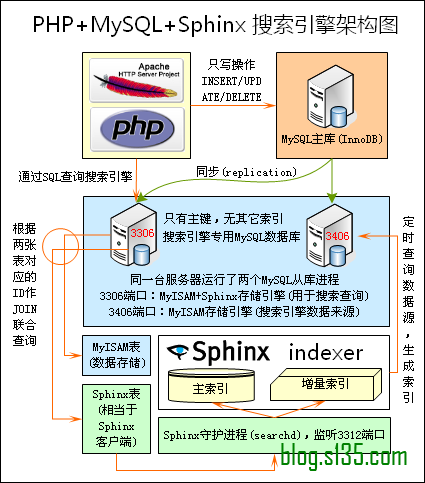

SphinxはSQLベースの高性能全文検索エンジンです。Sphinxの性能は多くの全文検索エンジンの中でも指折りです。Sphinxを利用することで、データベース自体よりも専門的な検索機能を実現でき、また的を絞ったパフォーマンス最適化を数多く行うことができます。
Sphinxの特徴
- 高速インデックス作成：約3分で100万件近いレコードのインデックスを作成でき、さらに増分インデックス方式を採用しているため、インデックスの再構築が非常に高速です。
- 電光石火の検索速度：1000万件という大量データでも、クエリ速度はミリ秒レベル以上で、2～4Gのテキスト量では平均クエリ時間は0.1秒未満です。
- 多くのスクリプト言語向けに検索APIを設計しました。例えばPHP、Python、Perl、Rubyなどがあります。そのため、ほとんどのプログラミングアプリケーションでSphinxの関連インターフェースを簡単に呼び出すことができます。
- MySQL向けにストレージエンジンプラグインを設計しました。そのため、MySQL上でSphinxを使用するなら、非常に便利です。
- 分散検索をサポートし、システム性能を水平に拡張できます。
PHP+MySQL+Sphinx 検索エンジンアーキテクチャ図

MySQLにSphinxをインストールする
MySQLにSphinxをインストールする方法は2つあります：
- 1つ目の方法はAPI呼び出しを利用する方法です。PHP、Python、Perl、Rubyなどのプログラミング言語のAPI関数を使用してクエリを実行できます。この方法ではMySQLを再コンパイルする必要がなく、モジュール間の変更が比較的少なく、柔軟です。
- 2つ目の方法はMySQLを再コンパイルし、SphinxをプラグインとしてMySQLにコンパイルする方法です。この方法ではプログラムの変更が比較的少なく、SQL文を変更するだけで済みます。ただし、前提としてMySQLのバージョンが5.1以上である必要があります。
以下は最初のインストール方法です：
#下载最新稳定版 wget http://www.sphinxsearch.com/downloads/sphinx-0.9.9.tar.gz tar xzvf sphinx-0.9.9.tar.gz cd sphinx-0.9.9 ./configure --prefix=/usr/local/sphinx/ --with-mysql --enable-id64 make make install
Sphinx中国語分詞プラグインCoreseekのインストール
注：coreseekのインストールチュートリアルは〜からここ、以下に詳細な手順を示します：
autoconfのインストールとアップグレード
coreseekはautoconf 2.64以上のバージョンを必要とするため、autoconfをアップグレードする必要があります。そうしないとエラーが発生します。http://download.chinaunix.net/download.php?id=29328&ResourceID=648autoconf-2.64.tar.bz2をダウンロードし、インストール方法は以下の通りです：
tar -jxvf autoconf-2.64.tar.bz2 cd autoconf-2.64 ./configure make make install
下载coreseek
新しいバージョンのcoreseekは、辞書とsphinxソースプログラムを1つのパッケージにまとめているため、coreseekパッケージをダウンロードするだけで済みます。
wget http://www.wapm.cn/uploads/csft/3.2/coreseek-3.2.14.tar.gz
mmsegのインストール（coreseekが使用する辞書）
tar xzvf coreseek-3.2.14.tar.gz cd mmseg-3.2.14 ./bootstrap #输出的warning信息可以忽略，如果出现error则需要解决 ./configure --prefix=/usr/local/mmseg3 make && make install cd ..
安装coreseek(sphinx)
cd csft-3.2.14 sh buildconf.sh #输出的warning信息可以忽略，如果出现error则需要解决 ./configure --prefix=/usr/local/coreseek --without-unixodbc --with-mmseg --with-mmseg-includes=/usr/local/mmseg3/include/mmseg/ --with-mmseg-libs=/usr/local/mmseg3/lib/ --with-mysql make && make install cd ..
mmsegの分かち書きとcoreseek検索のテスト
注：文字コードをzh_CN.UTF-8に事前に設定する必要があります。中国語を正しく表示するためです。私のシステムの文字コードはen_US.UTF-8でも問題ありません。
cd testpack cat var/test/test.xml #此时应该正确显示中文 /usr/local/mmseg3/bin/mmseg -d /usr/local/mmseg3/etc var/test/test.xml /usr/local/coreseek/bin/indexer -c etc/csft.conf --all /usr/local/coreseek/bin/search -c etc/csft.conf 网络搜索 此时正确的应该返回 words: 1. '网络': 1 documents, 1 hits 2. '搜索': 2 documents, 5 hits
mmseg辞書および設定ファイルを生成します。
新しいバージョンでは自動生成されています。
总结
Sphinxは高性能なSQL全文検索エンジンとして、開発者が引き続き注目する価値があります。特に多言語のAPIサポートにより、開発者はより便利に応用できます。
来源：http://www.codeceo.com/article/sphinx-sql-search-engine.html
著者：码农网 – 小峰
クリックしてノートを共有
ノートは本記事の内容の拡張である必要があります！
記事投稿は、ここをクリックしてください
注册邀请码获取方式
分享笔记前必须登录！
注册邀请码获取方式